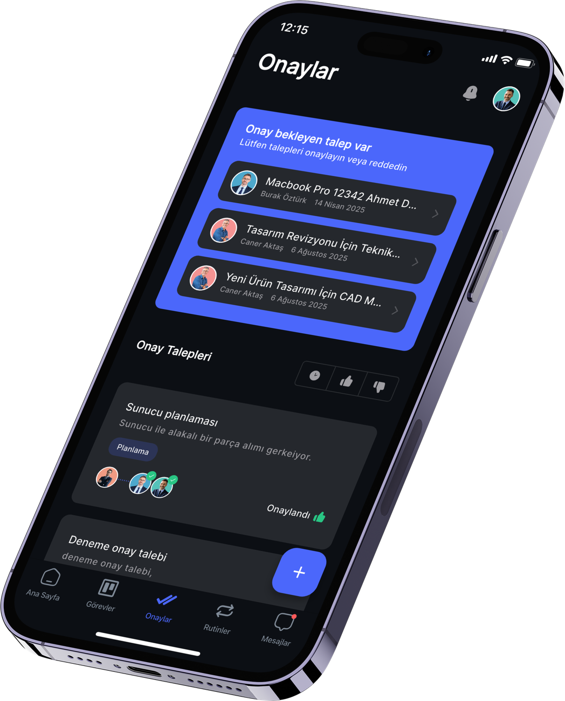
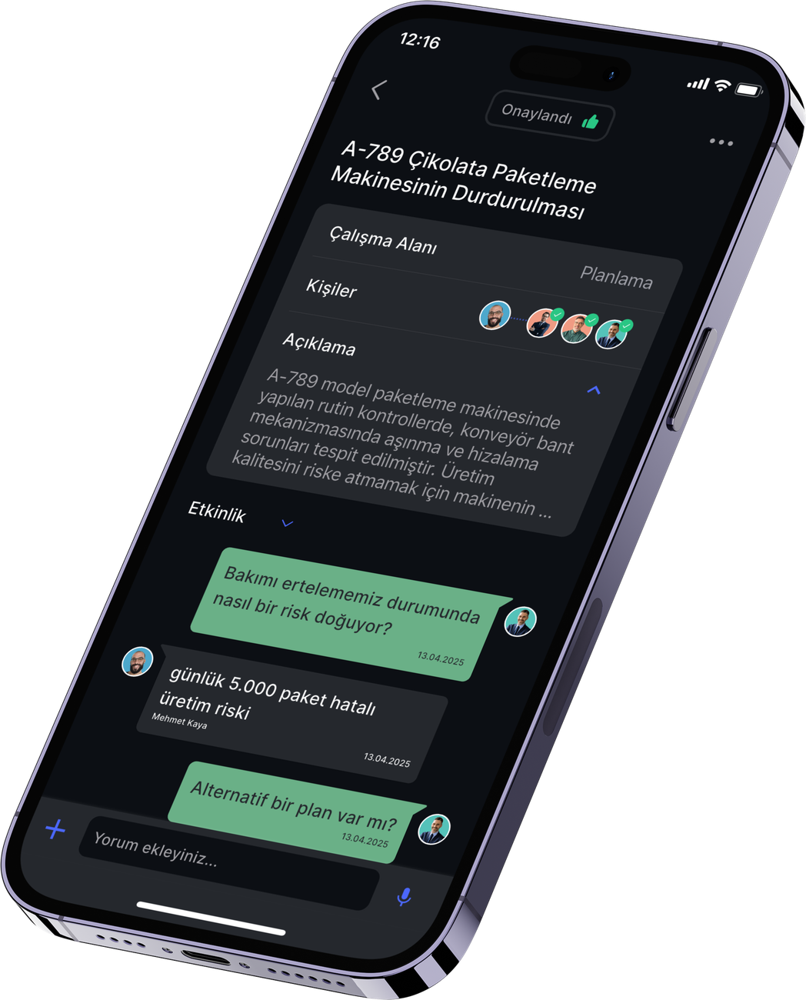
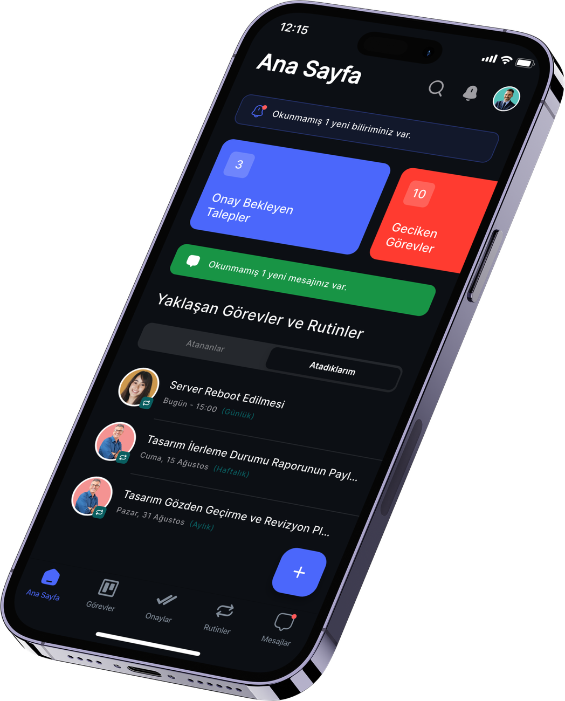

<!doctype html><html lang="tr"><head><meta charset="utf-8"><title>Carousel</title>
<link rel="stylesheet" href="common.css"><style>
html,body,#stage{width:1080px;height:1350px}
.slide{position:absolute;inset:0;display:none}
.pg{position:absolute;right:80px;top:80px;font-size:26px;color:var(--mut);font-weight:600;letter-spacing:.06em}
.brand{position:absolute;left:80px;top:72px;height:44px}
.brand img{height:44px}
.swipe{position:absolute;right:80px;bottom:76px;font-size:26px;color:#cfd5df;font-weight:600;display:flex;align-items:center;gap:12px}
.foot{position:absolute;left:80px;bottom:76px;font-size:24px;color:#6b7383}
.big{position:absolute;left:80px;width:920px}
.k{font-family:'Inter Display';font-weight:800;font-size:150px;line-height:1;letter-spacing:-.04em}
.tx{font-size:38px;line-height:1.45;color:#c4cad5}
.tx b{color:#fff;font-weight:600}
</style></head><body>
<div id="stage">
  <div id="glowA" class="glow" style="background:radial-gradient(circle,rgba(75,103,246,.28) 0%,rgba(75,103,246,0) 60%)"></div>
  <div id="glowB" class="glow" style="background:radial-gradient(circle,rgba(0,214,170,.16) 0%,rgba(0,214,170,0) 60%)"></div>
  <div id="slides"></div>
</div>
<script src="common.js"></script>
<script>
const q=new URLSearchParams(location.search);const deck=q.get('d')||'c1';const idx=+(q.get('s')||1);
const swipe='Kaydır <svg width="30" height="30" viewBox="0 0 24 24" fill="none" stroke="#cfd5df" stroke-width="2.4" stroke-linecap="round"><path d="M5 12h14M13 6l6 6-6 6"/></svg>';
const frameImg=(src,x,y,s=1)=>`<div class="a frame" style="left:${x}px;top:${y}px;transform:scale(${s});transform-origin:0 0"></div>`;
const cta=`
 <div class="big h1" style="top:500px;text-align:center;font-size:84px">Tek platform.<br><span class="grad">Net sorumluluk.</span><br>Ölçülebilir süreç.</div>
 <div class="big tx" style="top:860px;text-align:center">Görev, onay, rutin ve belge yönetimi<br>web, iOS ve Android'de.</div>
 <div class="a" style="left:290px;top:1060px;width:500px;height:90px;border-radius:45px;background:linear-gradient(90deg,var(--g1),var(--g2));display:grid;place-items:center;font-size:36px;font-weight:700;color:#04110c">www.gorew.com.tr</div>`;
const DECKS={
 c1:[
  ()=>`<div class="big h1" style="top:330px;font-size:118px">İşler neden<br><span class="grad">kayboluyor?</span></div>
   <div class="big tx" style="top:640px">4 sebep, 1 çözüm.</div><div id="nts"></div>`,
  ()=>`<div class="big k grad" style="top:230px">01</div><div class="big h1" style="top:420px;font-size:84px">Sorumlu<br>belli değil.</div>
   <div class="big tx" style="top:640px">“Ben sandım ki sen yapıyorsun.”<br>Her görevin <b>tek bir sahibi</b> ve <b>teslim tarihi</b> olmalı.</div>
   <div class="a card" style="left:80px;top:900px;width:920px;height:250px;padding:40px 44px">
     <div style="display:flex;justify-content:space-between;align-items:center"><div style="font-size:34px;font-weight:600">Fuar stand kiralama</div><div class="pill" style="background:rgba(43,212,127,.14);color:var(--green)"><i style="width:14px;height:14px;border-radius:50%;background:var(--green);display:block"></i>Yapılıyor</div></div>
     <div style="display:flex;align-items:center;gap:20px;margin-top:40px"><div><div style="font-size:30px;font-weight:600">Burak Öztürk</div><div style="font-size:24px;color:var(--mut)">Sorumlu · Teslim 31 Mayıs</div></div></div></div>`,
  ()=>`<div class="big k grad" style="top:230px">02</div><div class="big h1" style="top:420px;font-size:84px">Onaylar e-postada<br>bekliyor.</div>
   <div class="big tx" style="top:640px">Re: Re: Fw: zincirleri yerine <b>zincir onay</b>:<br>sıra kimdeyse talep onda.</div><div id="chainBox" class="a" style="left:117px;top:790px;transform:scale(.9);transform-origin:0 0"></div>`,
  ()=>`<div class="big k grad" style="top:230px">03</div><div class="big h1" style="top:420px;font-size:84px">Rutinler akılda<br>tutuluyor.</div>
   <div class="big tx" style="top:640px">Ruhsat, bakım, beyanname… Hafızaya değil,<br><b>sisteme bağlayın</b>. Geciken iş yöneticiye düşsün.</div><div id="rowsBox" class="a" style="left:70px;top:790px"></div>`,
  ()=>`<div class="big k grad" style="top:230px">04</div><div class="big h1" style="top:420px;font-size:84px">Ölçemediğinizi<br>yönetemezsiniz.</div>
   <div class="big tx" style="top:640px">Kim, neyi, ne zaman bitirdi? Geciken işler hangi<br>birimde birikiyor? <b>Hepsi tek ekranda.</b></div>
   <div class="a" style="left:80px;top:870px;display:flex;gap:24px">
    <div class="card" style="width:290px;height:260px;padding:36px"><div class="h1" style="font-size:76px">90K+</div><div style="font-size:26px;color:var(--mut);margin-top:12px">görev yönetildi</div></div>
    <div class="card" style="width:290px;height:260px;padding:36px"><div class="h1" style="font-size:76px">23K+</div><div style="font-size:26px;color:var(--mut);margin-top:12px">onay talebi</div></div>
    <div class="card" style="width:290px;height:260px;padding:36px"><div class="h1 grad" style="font-size:76px">%99,9</div><div style="font-size:26px;color:var(--mut);margin-top:12px">erişilebilirlik</div></div></div>`,
  ()=>cta],
 c2:[
  ()=>`<div class="big h1" style="top:250px;font-size:104px">Satın alma onayı<br><span class="grad">4 adımda</span><br>nasıl biter?</div>
   `,
  ()=>`<div class="big k grad" style="top:230px">01</div><div class="big h1" style="top:420px;font-size:84px">Talep açılır.</div>
   <div class="big tx" style="top:540px">Ne isteniyor, neden, ne kadar? Belgesiyle<br>birlikte <b>tek bir kayıt</b>.</div>
   <div class="a card" style="left:80px;top:760px;width:920px;height:420px;padding:44px">
     <div style="font-size:24px;color:var(--mut)">Başlık</div><div style="font-size:36px;font-weight:600;margin-top:6px">MacBook Pro · Tasarım ekibi</div>
     <div style="display:flex;gap:60px;margin-top:34px"><div><div style="font-size:24px;color:var(--mut)">Çalışma alanı</div><div style="font-size:32px;margin-top:6px">Planlama</div></div><div><div style="font-size:24px;color:var(--mut)">Ek</div><div style="font-size:32px;margin-top:6px">teklif.pdf</div></div></div>
     <div style="position:absolute;right:44px;bottom:44px;height:76px;padding:0 40px;border-radius:38px;background:var(--blue);display:grid;place-items:center;font-size:30px;font-weight:700">Onaya gönder</div></div>`,
  ()=>`<div class="big k grad" style="top:230px">02</div><div class="big h1" style="top:420px;font-size:84px">Sırayla onaylanır.</div>
   <div class="big tx" style="top:540px">Bir kişi onaylamadan sıradaki kişi talebi<br>görmez. <b>Sıra kimdeyse sorumluluk onda.</b></div><div id="chainBox" class="a" style="left:117px;top:760px;transform:scale(.9);transform-origin:0 0"></div>`,
  ()=>`<div class="big k grad" style="top:230px">03</div><div class="big h1" style="top:420px;font-size:84px">Herkes durumu<br>görür.</div>
   <div class="big tx" style="top:640px;width:470px">Sorular, cevaplar ve<br>kararlar talebin<br>içinde kalır.<br><b>Kimse “ne oldu?”<br>diye sormaz.</b></div>
   `,
  ()=>`<div class="big k grad" style="top:230px">04</div><div class="big h1" style="top:420px;font-size:84px">Kilitlenir,<br>kayda geçer.</div>
   <div class="big tx" style="top:640px">Onaylanan içerik değiştirilemez. Kim, ne zaman<br>onayladı? <b>Denetim kaydında.</b></div><div id="chainBox" class="a" style="left:117px;top:790px;transform:scale(.9);transform-origin:0 0"></div>`,
  ()=>cta],
 c3:[
  ()=>`<div class="big h1" style="top:270px;font-size:112px">Siz tatildeyken<br><span class="grad">işler kimde?</span></div>
   <div class="big tx" style="top:560px">Her yöneticinin aklındaki soru.<br>4 cevap, tek ekran.</div><div id="nts"></div>`,
  ()=>`<div class="big k grad" style="top:230px">01</div><div class="big h1" style="top:420px;font-size:84px">Her işin bir<br>sahibi var.</div>
   <div class="big tx" style="top:640px">Siz yokken de kimin neyle ilgilendiği belli:<br><b>sorumlu, teslim tarihi ve durum</b> görevin üzerinde.</div>
   <div class="a card" style="left:80px;top:900px;width:920px;height:250px;padding:40px 44px">
     <div style="display:flex;justify-content:space-between;align-items:center"><div style="font-size:34px;font-weight:600">Bayi toplantısı organizasyonu</div><div class="pill" style="background:rgba(43,212,127,.14);color:var(--green)"><i style="width:14px;height:14px;border-radius:50%;background:var(--green);display:block"></i>Yapılıyor</div></div>
     <div style="display:flex;align-items:center;gap:20px;margin-top:40px"><div><div style="font-size:30px;font-weight:600">Caner Aydın</div><div style="font-size:24px;color:var(--mut)">Sorumlu · Teslim 6 Kasım</div></div></div></div>`,
  ()=>`<div class="big k grad" style="top:230px">02</div><div class="big h1" style="top:420px;font-size:84px">Onaylar e-postada<br>kaybolmaz.</div>
   <div class="big tx" style="top:640px">Talep sırayla ilerler, <b>sıra kimdeyse herkes görür.</b><br>Döndüğünüzde bekleyenler tek listede.</div><div id="chainBox" class="a" style="left:117px;top:800px;transform:scale(.9);transform-origin:0 0"></div>`,
  ()=>`<div class="big k grad" style="top:230px">03</div><div class="big h1" style="top:420px;font-size:84px">Rutinler kendini<br>hatırlatır.</div>
   <div class="big tx" style="top:640px">Haftalık, aylık, yıllık işler takvime bağlı.<br><b>Geciken iş yöneticisine bildirilir</b>, siz sormadan.</div><div id="rowsBox" class="a" style="left:70px;top:800px"></div>`,
  ()=>`<div class="big k grad" style="top:230px">04</div><div class="big h1" style="top:420px;font-size:84px">Durum cebinizde.</div>
   <div class="big tx" style="top:560px;width:460px">Web, iOS ve<br>Android.<br>Nerede olursanız<br>olun, <b>işlerin<br>durumu bir<br>bakışta.</b></div>
   `,
  ()=>ctaT('Siz yokken de<br><span class="grad">işler yürüsün.</span>')],
 c4:[
  ()=>`<div class="big h1" style="top:260px;font-size:100px">Hafızaya emanet<br>edilmemesi gereken<br><span class="grad">4 tarih</span></div>
   <div class="big tx" style="top:640px">Kaçtığında bedelini ceza, faiz ya da<br>kesintiyle şirket öder.</div><div id="nts"></div>`,
  ()=>`<div class="big k grad" style="top:230px">01</div><div class="big h1" style="top:420px;font-size:84px">Ruhsat ve izinler.</div>
   <div class="big tx" style="top:540px">İşyeri ruhsatı, faaliyet izinleri, belgeler…<br><b>Yıllık rutin</b> olarak tanımlayın; vakti gelince<br>sorumlusuna görev düşsün.</div><div id="rowsBox" class="a" style="left:70px;top:820px"></div>`,
  ()=>`<div class="big k grad" style="top:230px">02</div><div class="big h1" style="top:420px;font-size:84px">Sözleşme bitişleri.</div>
   <div class="big tx" style="top:540px">Kira, tedarikçi, bakım sözleşmeleri belge<br>arşivinde; <b>bitiş yaklaşınca uyarı</b> gelir.</div>
   <div class="a card" style="left:80px;top:770px;width:920px;height:440px;padding:40px 44px">
    <div style="font-size:26px;color:var(--mut);font-weight:600;letter-spacing:.06em">BELGE ARŞİVİ · SÖZLEŞMELER</div>
    ${[['Depo kira sözleşmesi','Bitiş 30 Kasım','amber','Yaklaşıyor'],['Tedarikçi çerçeve sözleşmesi','Bitiş 15 Ocak','green','Aktif'],['Jeneratör bakım sözleşmesi','Bitiş 1 Mart','green','Aktif']].map((r,i)=>`
    <div style="display:flex;align-items:center;gap:24px;margin-top:${i?26:34}px;padding-top:${i?26:0}px;border-top:${i?'1px solid var(--line)':'0'}">
     <div style="width:64px;height:64px;border-radius:18px;background:rgba(75,103,246,.16);display:grid;place-items:center">${ICON.file.replace('stroke="#fff"','stroke="#7d93ff"').replace('<svg ','<svg width="32" height="32" ')}</div>
     <div style="flex:1"><div style="font-size:31px;font-weight:600">${r[0]}</div><div style="font-size:24px;color:var(--mut);margin-top:4px">${r[1]}</div></div>
     <div class="pill" style="height:52px;font-size:23px;background:${r[2]==='amber'?'rgba(245,165,36,.14)':'rgba(43,212,127,.14)'};color:var(--${r[2]})">${r[2]==='amber'?ICON.bell.replace('stroke="#fff"','stroke="currentColor"').replace('<svg ','<svg width="24" height="24" '):''}${r[3]}</div></div>`).join('')}
   </div>`,
  ()=>`<div class="big k grad" style="top:230px">03</div><div class="big h1" style="top:420px;font-size:84px">Sigorta poliçeleri.</div>
   <div class="big tx" style="top:540px">Araç, işyeri, sağlık… Yenileme tarihi<br><b>bir kişinin ajandasında değil</b>, şirketin<br>sisteminde dursun.</div><div id="rowsBox" class="a" style="left:70px;top:820px"></div>`,
  ()=>`<div class="big k grad" style="top:230px">04</div><div class="big h1" style="top:420px;font-size:84px">Bakım ve beyanlar.</div>
   <div class="big tx" style="top:540px">Yangın tüpü, asansör, KDV beyannamesi…<br>Mali müşavirinizi de <b>dış kullanıcı olarak</b><br>aynı akışa ekleyin.</div><div id="rowsBox" class="a" style="left:70px;top:820px"></div>`,
  ()=>ctaT('Tarihleri hafızaya değil,<br><span class="grad">sisteme bağlayın.</span>')],
 c5:[
  ()=>`<div class="big h1" style="top:260px;font-size:104px">Dış ekibiniz de<br><span class="grad">aynı akışta mı?</span></div>
   <div class="big tx" style="top:540px">Mali müşavir, avukat, ajans…<br>İşin bir kısmı şirket dışında ilerler.</div><div id="nts"></div>`,
  ()=>`<div class="big k grad" style="top:230px">01</div><div class="big h1" style="top:420px;font-size:84px">Mali müşavir.</div>
   <div class="big tx" style="top:540px">Beyanname ve evrak rutinleri <b>onun da<br>ekranında</b>. “Evrakları attınız mı?”<br>e-postası yerine görev.</div><div id="rowsBox" class="a" style="left:70px;top:820px"></div>`,
  ()=>`<div class="big k grad" style="top:230px">02</div><div class="big h1" style="top:420px;font-size:84px">Avukat.</div>
   <div class="big tx" style="top:540px">Sözleşme taslağı, notlar ve teslim tarihi<br><b>görevin içinde</b>. Hangi sürümde kalındığı<br>herkes için belli.</div>
   <div class="a card" style="left:80px;top:860px;width:920px;height:290px;padding:40px 44px">
     <div style="display:flex;justify-content:space-between;align-items:center"><div style="font-size:34px;font-weight:600">Bayi sözleşmesi revizyonu</div><div class="pill" style="background:rgba(43,212,127,.14);color:var(--green)"><i style="width:14px;height:14px;border-radius:50%;background:var(--green);display:block"></i>Yapılıyor</div></div>
     <div style="display:flex;align-items:center;gap:20px;margin-top:40px"><div><div style="font-size:30px;font-weight:600">Hukuk danışmanı</div><div style="font-size:24px;color:var(--mut)">Dış kullanıcı · Teslim 12 Kasım</div></div>
     <div class="pill" style="margin-left:auto;height:54px;font-size:24px;background:rgba(75,103,246,.16);color:#9fb0ff">${ICON.file.replace('stroke="#fff"','stroke="currentColor"').replace('<svg ','<svg width="24" height="24" ')}taslak_v3.docx</div></div></div>`,
  ()=>`<div class="big k grad" style="top:230px">03</div><div class="big h1" style="top:420px;font-size:84px">Ajans.</div>
   <div class="big tx" style="top:540px">Kampanya görselleri e-posta zincirinde değil,<br><b>onay zincirinde</b>. Sıra kimdeyse herkes görür.</div><div id="chainBox" class="a" style="left:117px;top:780px;transform:scale(.9);transform-origin:0 0"></div>`,
  ()=>`<div class="big k grad" style="top:230px">04</div><div class="big h1" style="top:420px;font-size:84px">Kontrol sizde.</div>
   <div class="big tx" style="top:540px">Dış ekibi yalnızca ilgili işe ekleyin.<br>Verileriniz <b>KVKK uyumlu</b> ve <b>256-bit<br>şifrelemeyle</b> korunur.</div>
   <div class="a" style="left:80px;top:870px;display:flex;gap:24px">
    <div class="card" style="width:290px;height:260px;padding:36px"><div class="h1" style="font-size:62px">KVKK</div><div style="font-size:26px;color:var(--mut);margin-top:12px">uyumlu altyapı</div></div>
    <div class="card" style="width:290px;height:260px;padding:36px"><div class="h1" style="font-size:62px;white-space:nowrap">256-bit</div><div style="font-size:26px;color:var(--mut);margin-top:12px">şifreleme</div></div>
    <div class="card" style="width:290px;height:260px;padding:36px"><div class="h1 grad" style="font-size:62px">%99,9</div><div style="font-size:26px;color:var(--mut);margin-top:12px">erişilebilirlik</div></div></div>`,
  ()=>ctaT('Şirket içi, şirket dışı:<br><span class="grad">tek akış.</span>')],
 c6:[
  ()=>`<div class="big h1" style="top:260px;font-size:100px">Her ay tekrarlanan<br>işler <span class="grad">kimin<br>aklında?</span></div>
   <div class="big tx" style="top:640px">Sektörünüze göre 4 rutin örneği.<br>Hafızaya değil, sisteme bağlayın.</div><div id="nts"></div>`,
  ()=>`<div class="big k grad" style="top:230px">01</div><div class="big h1" style="top:420px;font-size:84px">Üretim.</div>
   <div class="big tx" style="top:540px">Bakım aksarsa hat durur. Periyodik işler<br><b>takvime bağlı</b>; vakti gelince sorumlusuna<br>görev düşer.</div><div id="rowsBox" class="a" style="left:70px;top:800px"></div>`,
  ()=>`<div class="big k grad" style="top:230px">02</div><div class="big h1" style="top:420px;font-size:84px">Mağaza ve perakende.</div>
   <div class="big tx" style="top:540px">Şube sayısı arttıkça “yapıldı mı?” sorusu<br>da artar. <b>Cevap ekranda</b>, telefonda değil.</div><div id="rowsBox" class="a" style="left:70px;top:800px"></div>`,
  ()=>`<div class="big k grad" style="top:230px">03</div><div class="big h1" style="top:420px;font-size:84px">Hizmet ve ajans.</div>
   <div class="big tx" style="top:540px">Müşteri raporu, fatura, yenileme görüşmesi…<br>Gecikirse <b>müşteri memnuniyeti</b> öder.</div><div id="rowsBox" class="a" style="left:70px;top:800px"></div>`,
  ()=>`<div class="big k grad" style="top:230px">04</div><div class="big h1" style="top:420px;font-size:84px">Saha ve şantiye.</div>
   <div class="big tx" style="top:540px">İş güvenliğinde atlanan kontrolün bedeli<br>ağırdır. <b>Geciken iş yöneticisine bildirilir</b>,<br>siz sormadan.</div><div id="rowsBox" class="a" style="left:70px;top:820px"></div>`,
  ()=>ctaT('Tekrarlanan işler<br><span class="grad">kendini hatırlatsın.</span>')]
};
function ctaT(h){return cta.replace(/<div class="big h1"[^]*?<\/div>/,`<div class="big h1" style="top:520px;text-align:center;font-size:84px">${h}</div>`).replace('top:860px','top:770px').replace('top:1060px','top:980px');}
const n=DECKS[deck].length;
const s=el(`<div class="slide" style="display:block">${DECKS[deck][idx-1]()}
 <div class="brand"></div><div class="pg">${idx}/${n}</div>
 ${idx<n?`<div class="swipe">${swipe}</div>`:''}<div class="foot">@gorew.app</div></div>`);
$('slides').appendChild(s);
T($('glowA'),{x:-600+idx*90,y:-700});T($('glowB'),{x:200-idx*60,y:500});
const NTS={c3:[{x:80,y:760,r:-3,c:'#d0453b',i:'cal',h:'Takvim',m:'yarın',b:'Yıllık izin · 10 gün'},{x:380,y:910,r:2.5,c:'#3d6fd6',i:'mail',h:'E-posta',m:'şimdi',b:'Onayınızı bekleyen 7 talep',k:'7'},{x:110,y:1060,r:-1.5,c:'#2a9d5c',i:'chat',h:'Ekip Grubu',m:'2 dk',b:'Bunu kime soracağız?'}],
 c5:[{x:80,y:760,r:-3,c:'#3d6fd6',i:'mail',h:'Mali Müşavir',m:'dün',b:'Faturaları tekrar atar mısınız?'},{x:380,y:910,r:2.5,c:'#3d6fd6',i:'mail',h:'Avukat',m:'3 gün önce',b:'Re: Fw: Sözleşme taslağı v3',k:'14'},{x:110,y:1060,r:-1.5,c:'#2a9d5c',i:'chat',h:'Ajans Grubu',m:'şimdi',b:'Görseller onaylandı mı?'}],
 c6:[{x:80,y:815,r:-3,c:'#d0453b',i:'cal',h:'Takvim',m:'gecikti',b:'Kompresör bakımı gecikti'},{x:380,y:960,r:2.5,c:'#2a9d5c',i:'chat',h:'Şube Grubu',m:'2 dk',b:'Stok sayımı yapıldı mı?'},{x:110,y:1105,r:-1.5,c:'#3d6fd6',i:'mail',h:'Müşteri',m:'dün',b:'Aylık rapor ne zaman gelir?'}],
 c4:[{x:80,y:790,r:-3,c:'#d0453b',i:'cal',h:'Takvim',m:'gecikti',b:'Ruhsat yenileme gecikti'},{x:380,y:935,r:2.5,c:'#d0453b',i:'file',h:'Sözleşme',m:'dün',b:'Kira sözleşmesi bitti'},{x:110,y:1080,r:-1.5,c:'#d0453b',i:'bell',h:'Hatırlatma',m:'3 gün önce',b:'Poliçe yenilenmedi'}]};
if($('nts')&&NTS[deck]){NTS[deck].forEach(x=>{const e=notif(x);e.style.transform=`rotate(${x.r}deg)`;$('nts').appendChild(e);});}
else if($('nts')){[{x:80,y:780,r:-3,c:'#2a9d5c',i:'chat',h:'Ekip Grubu',m:'şimdi',b:'Bu iş kimdeydi?',k:'48'},{x:380,y:930,r:2.5,c:'#3d6fd6',i:'mail',h:'E-posta',m:'2 dk',b:'Re: Re: Fw: Teklif onayı?'},{x:110,y:1080,r:-1.5,c:'#d0453b',i:'cal',h:'Takvim',m:'gecikti',b:'Ruhsat yenileme gecikti'}].forEach(x=>{const e=notif(x);e.style.transform=`rotate(${x.r}deg)`;$('nts').appendChild(e);});}
if($('chainBox')){const c=(deck==='c5'?chainCard('Kampanya görselleri · Kasım','Pazarlama · 4 Kasım',[{img:'av1',role:'Ajans'},{img:'av2',role:'Pazarlama'},{img:'av3',role:'Birim yön.'},{img:'av4',role:'Genel müdür'}]):deck==='c3'?chainCard('Fuar stand ödemesi','Pazarlama · 28 Ekim',STEPS):chainCard('Satın alma · MacBook Pro','Planlama · 14 Nisan',STEPS));$('chainBox').appendChild(c.root);
  const full=(deck==='c2'&&idx===5);const part=(deck==='c2'&&idx===3)||(deck==='c3'&&idx===3)||(deck==='c5');
  c.update(full?99:(part?11.2:99),[10.5,11.0,11.5],full?11.8:(part?99:11.8),full?12.1:99);c.root.style.opacity=1;c.root.style.transform='none';}
const ROWS={'c3_4':[{t:'Haftalık satış raporu',f:'Her cuma · 16:00'},{t:'Araç bakımı',f:'Her 3 ayda bir'},{t:'Kira ödemesi',f:'Her ayın 1\'i'}],
 'c4_2':[{t:'İşyeri ruhsatı yenileme',f:'Yıllık · 14 Ekim',late:1},{t:'Çevre izni belgesi',f:'Yıllık · 2 Aralık'}],
 'c4_4':[{t:'Araç kasko yenileme',f:'Yıllık · 3 Kasım'},{t:'İşyeri yangın poliçesi',f:'Yıllık · 20 Aralık'}],
 'c5_2':[{t:'KDV beyannamesi evrakları',f:'Her ay · Mali müşavir'},{t:'Bordro ve SGK bildirgesi',f:'Her ay · Mali müşavir'}],
 'c6_2':[{t:'Kompresör bakımı',f:'Her 3 ayda bir',late:1},{t:'Ölçüm cihazı kalibrasyonu',f:'Yıllık · 15 Ocak'},{t:'Haftalık iş güvenliği turu',f:'Her pazartesi'}],
 'c6_3':[{t:'Haftalık stok sayımı',f:'Her pazartesi · Tüm şubeler'},{t:'Gün sonu kasa raporu',f:'Her gün · 22:00'},{t:'Raf etiket kontrolü',f:'Her cuma'}],
 'c6_4':[{t:'Müşteri aylık raporu',f:'Her ayın 5\'i'},{t:'Fatura kesimi',f:'Her ayın 1\'i'},{t:'Sözleşme yenileme görüşmesi',f:'Yıllık · Müşteri bazında'}],
 'c6_5':[{t:'Şantiye İSG denetimi',f:'Her hafta · Saha şefi'},{t:'İskele kontrol formu',f:'Her ay',late:1},{t:'Kaldırma ekipmanı muayenesi',f:'Her 6 ayda bir'}],
 'c4_5':[{t:'Yangın tüpü kontrolü',f:'Her 6 ayda bir'},{t:'KDV beyannamesi',f:'Her ay · Mali müşavir'}]};
if($('rowsBox')){const r=routineRows(ROWS[deck+'_'+idx]||[{t:'Sunucu yedek kontrolü',f:'Her gün · 15:00'},{t:'Haftalık stok sayımı',f:'Her pazartesi'},{t:'Ruhsat yenileme',f:'Yıllık · 14 Ekim',late:1}]);$('rowsBox').appendChild(r.root);r.update(99,0,[1,1,1]);}
window.ready=ready();
</script></body></html>
